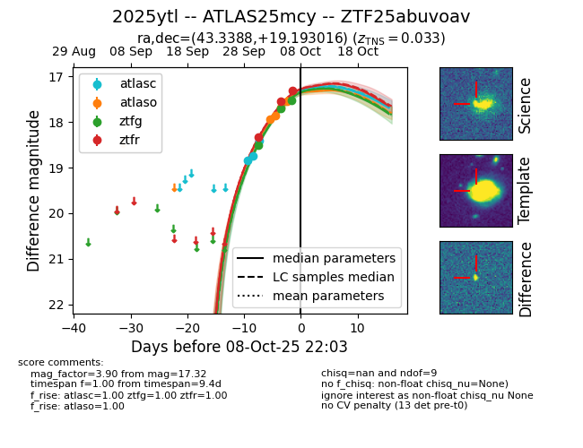
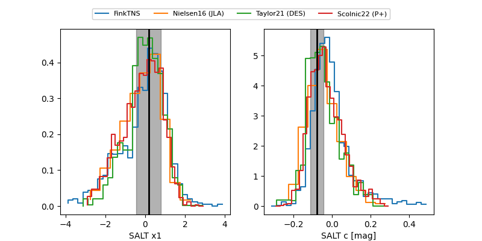

FINK: ZTF25abuvoav
Lasair: ZTF25abuvoav
ALeRCE: ZTF25abuvoav
TNS: 2025ytl
YSE: 2025ytl
ZTF25abuvoav (ztf,fink)
2025ytl (tns,yse)
ATLAS25mcy (atlas)
equatorial (ra, dec) = (43.3388,+19.19302)
galactic (l, b) = (158.7516,-35.06216)


last atlasc=18.41, atlaso=17.54, ztfg=17.53, ztfr=17.32
3 atlasc, 4 atlaso, 3 ztfg, 3 ztfr detections